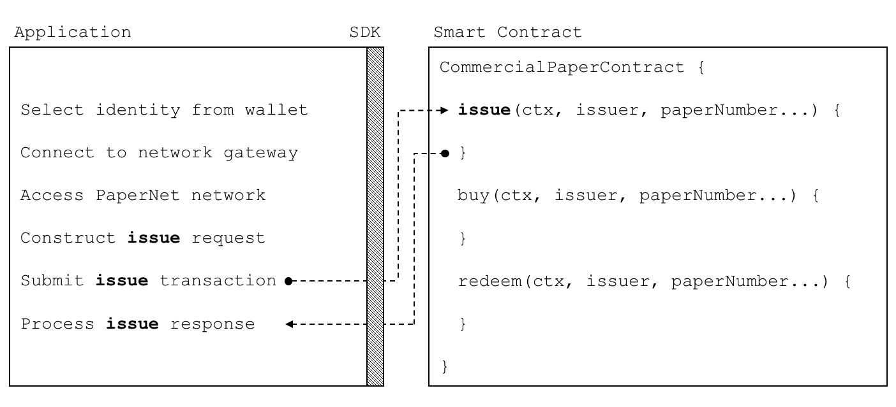

hyperledger-fabricdocs
Audience: Architects, Application and smart contract developers
An application can interact with a blockchain network by submitting transactions to a ledger or querying ledger content. This topic covers the mechanics of how an application does this; in our scenario, organizations access PaperNet using applications which invoke issue, buy and redeem transactions defined in a commercial paper smart contract. Even though MagnetoCorp’s application to issue a commercial paper is basic, it covers all the major points of understanding.
In this topic, we’re going to cover:
The application flow to invoke a smart contract
How an application uses a wallet and identity
How an application connects using a gateway
How to access a particular network
How to construct a transaction request
How to submit a transaction
How to process a transaction response
To help your understanding, we’ll make reference to the commercial paper sample application provided with Hyperledger Fabric. You can download it and run it locally. It is written in both JavaScript and Java, but the logic is quite language independent, so you’ll easily be able to see what’s going on! (The sample will become available for Go as well.)
An application interacts with a blockchain network using the Fabric SDK. Here’s a simplified diagram of how an application invokes a commercial paper smart contract:
 A PaperNet application invokes the commercial paper smart contract to submit an issue transaction request.
An application has to follow six basic steps to submit a transaction:
Select an identity from a wallet
Connect to a gateway
Access the desired network
Construct a transaction request for a smart contract
Submit the transaction to the network
Process the response
You’re going to see how a typical application performs these six steps using the Fabric SDK. You’ll find the application code in the issue.js file. View it in your browser, or open it in your favourite editor if you’ve downloaded it. Spend a few moments looking at the overall structure of the application; even with comments and spacing, it’s only 100 lines of code!
issue.js
Towards the top of issue.js, you’ll see two Fabric classes are brought into scope:
const { Wallets, Gateway } = require('fabric-network');
You can read about the fabric-network classes in the node SDK documentation, but for now, let’s see how they are used to connect MagnetoCorp’s application to PaperNet. The application uses the Fabric Wallet class as follows:
fabric-network
const wallet = await Wallets.newFileSystemWallet('../identity/user/isabella/wallet');
See how wallet locates a wallet in the local filesystem. The identity retrieved from the wallet is clearly for a user called Isabella, who is using the issue application. The wallet holds a set of identities – X.509 digital certificates – which can be used to access PaperNet or any other Fabric network. If you run the tutorial, and look in this directory, you’ll see the identity credentials for Isabella.
wallet
issue
Think of a wallet holding the digital equivalents of your government ID, driving license or ATM card. The X.509 digital certificates within it will associate the holder with a organization, thereby entitling them to rights in a network channel. For example, Isabella might be an administrator in MagnetoCorp, and this could give her more privileges than a different user – Balaji from DigiBank. Moreover, a smart contract can retrieve this identity during smart contract processing using the transaction context.
Isabella
Balaji
Note also that wallets don’t hold any form of cash or tokens – they hold identities.
The second key class is a Fabric Gateway. Most importantly, a gateway identifies one or more peers that provide access to a network – in our case, PaperNet. See how issue.js connects to its gateway:
await gateway.connect(connectionProfile, connectionOptions);
gateway.connect() has two important parameters:
gateway.connect()
connectionProfile: the file system location of a connection profile that identifies a set of peers as a gateway to PaperNet
connectionOptions: a set of options used to control how issue.js interacts with PaperNet
See how the client application uses a gateway to insulate itself from the network topology, which might change. The gateway takes care of sending the transaction proposal to the right peer nodes in the network using the connection profile and connection options.
Spend a few moments examining the connection profile ./gateway/connectionProfile.yaml. It uses YAML, making it easy to read.
./gateway/connectionProfile.yaml
It was loaded and converted into a JSON object:
let connectionProfile = yaml.safeLoad(file.readFileSync('./gateway/connectionProfile.yaml', 'utf8'));
Right now, we’re only interested in the channels: and peers: sections of the profile: (We’ve modified the details slightly to better explain what’s happening.)
channels:
peers:
channels: papernet: peers: peer1.magnetocorp.com: endorsingPeer: true eventSource: true peer2.digibank.com: endorsingPeer: true eventSource: true peers: peer1.magnetocorp.com: url: grpcs://localhost:7051 grpcOptions: ssl-target-name-override: peer1.magnetocorp.com request-timeout: 120 tlsCACerts: path: certificates/magnetocorp/magnetocorp.com-cert.pem peer2.digibank.com: url: grpcs://localhost:8051 grpcOptions: ssl-target-name-override: peer1.digibank.com tlsCACerts: path: certificates/digibank/digibank.com-cert.pem
See how channel: identifies the PaperNet: network channel, and two of its peers. MagnetoCorp has peer1.magenetocorp.com and DigiBank has peer2.digibank.com, and both have the role of endorsing peers. Link to these peers via the peers: key, which contains details about how to connect to them, including their respective network addresses.
channel:
PaperNet:
peer1.magenetocorp.com
peer2.digibank.com
The connection profile contains a lot of information – not just peers – but network channels, network orderers, organizations, and CAs, so don’t worry if you don’t understand all of it!
Let’s now turn our attention to the connectionOptions object:
connectionOptions
let connectionOptions = { identity: userName, wallet: wallet, discovery: { enabled:true, asLocalhost: true } };
See how it specifies that identity, userName, and wallet, wallet, should be used to connect to a gateway. These were assigned values earlier in the code.
userName
There are other connection options which an application could use to instruct the SDK to act intelligently on its behalf. For example:
let connectionOptions = { identity: userName, wallet: wallet, eventHandlerOptions: { commitTimeout: 100, strategy: EventStrategies.MSPID_SCOPE_ANYFORTX }, }
Here, commitTimeout tells the SDK to wait 100 seconds to hear whether a transaction has been committed. And strategy: EventStrategies.MSPID_SCOPE_ANYFORTX specifies that the SDK can notify an application after a single MagnetoCorp peer has confirmed the transaction, in contrast to strategy: EventStrategies.NETWORK_SCOPE_ALLFORTX which requires that all peers from MagnetoCorp and DigiBank to confirm the transaction.
commitTimeout
strategy: EventStrategies.MSPID_SCOPE_ANYFORTX
strategy: EventStrategies.NETWORK_SCOPE_ALLFORTX
If you’d like to, read more about how connection options allow applications to specify goal-oriented behaviour without having to worry about how it is achieved.
The peers defined in the gateway connectionProfile.yaml provide issue.js with access to PaperNet. Because these peers can be joined to multiple network channels, the gateway actually provides the application with access to multiple network channels!
connectionProfile.yaml
See how the application selects a particular channel:
const network = await gateway.getNetwork('PaperNet');
From this point onwards, network will provide access to PaperNet. Moreover, if the application wanted to access another network, BondNet, at the same time, it is easy:
network
BondNet
const network2 = await gateway.getNetwork('BondNet');
Now our application has access to a second network, BondNet, simultaneously with PaperNet!
PaperNet
We can see here a powerful feature of Hyperledger Fabric – applications can participate in a network of networks, by connecting to multiple gateway peers, each of which is joined to multiple network channels. Applications will have different rights in different channels according to their wallet identity provided in gateway.connect().
The application is now ready to issue a commercial paper. To do this, it’s going to use CommercialPaperContract and again, its fairly straightforward to access this smart contract:
CommercialPaperContract
const contract = await network.getContract('papercontract', 'org.papernet.commercialpaper');
Note how the application provides a name – papercontract – and an explicit contract name: org.papernet.commercialpaper! We see how a contract name picks out one contract from the papercontract.js chaincode file that contains many contracts. In PaperNet, papercontract.js was installed and deployed to the channel with the name papercontract, and if you’re interested, read how to deploy a chaincode containing multiple smart contracts.
papercontract
org.papernet.commercialpaper
papercontract.js
If our application simultaneously required access to another contract in PaperNet or BondNet this would be easy:
const euroContract = await network.getContract('EuroCommercialPaperContract'); const bondContract = await network2.getContract('BondContract');
In these examples, note how we didn’t use a qualifying contract name – we have only one smart contract per file, and getContract() will use the first contract it finds.
getContract()
Recall the transaction MagnetoCorp uses to issue its first commercial paper:
Txn = issue Issuer = MagnetoCorp Paper = 00001 Issue time = 31 May 2020 09:00:00 EST Maturity date = 30 November 2020 Face value = 5M USD
Let’s now submit this transaction to PaperNet!
Submitting a transaction is a single method call to the SDK:
const issueResponse = await contract.submitTransaction('issue', 'MagnetoCorp', '00001', '2020-05-31', '2020-11-30', '5000000');
See how the submitTransaction() parameters match those of the transaction request. It’s these values that will be passed to the issue() method in the smart contract, and used to create a new commercial paper. Recall its signature:
submitTransaction()
issue()
async issue(ctx, issuer, paperNumber, issueDateTime, maturityDateTime, faceValue) {...}
It might appear that a smart contract receives control shortly after the application issues submitTransaction(), but that’s not the case. Under the covers, the SDK uses the connectionOptions and connectionProfile details to send the transaction proposal to the right peers in the network, where it can get the required endorsements. But the application doesn’t need to worry about any of this – it just issues submitTransaction and the SDK takes care of it all!
connectionProfile
submitTransaction
Note that the submitTransaction API includes a process for listening for transaction commits. Listening for commits is required because without it, you will not know whether your transaction has successfully been orderered, validated, and committed to the ledger.
Let’s now turn our attention to how the application handles the response!
Recall from papercontract.js how the issue transaction returns a commercial paper response:
return paper.toBuffer();
You’ll notice a slight quirk – the new paper needs to be converted to a buffer before it is returned to the application. Notice how issue.js uses the class method CommercialPaper.fromBuffer() to rehydrate the response buffer as a commercial paper:
paper
CommercialPaper.fromBuffer()
let paper = CommercialPaper.fromBuffer(issueResponse);
This allows paper to be used in a natural way in a descriptive completion message:
console.log(`${paper.issuer} commercial paper : ${paper.paperNumber} successfully issued for value ${paper.faceValue}`);
See how the same paper class has been used in both the application and smart contract – if you structure your code like this, it’ll really help readability and reuse.
As with the transaction proposal, it might appear that the application receives control soon after the smart contract completes, but that’s not the case. Under the covers, the SDK manages the entire consensus process, and notifies the application when it is complete according to the strategy connectionOption. If you’re interested in what the SDK does under the covers, read the detailed transaction flow.
strategy
That’s it! In this topic you’ve understood how to call a smart contract from a sample application by examining how MagnetoCorp’s application issues a new commercial paper in PaperNet. Now examine the key ledger and smart contract data structures are designed by in the architecture topic behind them.